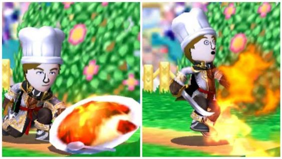
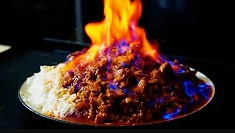

Super Spicy Curry from Super Smash Bros

Description
The spiciest curry around. Eat it, and you'll be able to attack by spitting out fireballs. The eater of the curry will soon be unable to handle the heat, however, and end up frantically dashing about the screen. This is a pretty funny sight that never gets old, especially when it's Samus or Snake. Eat this mouth-scorching dish if you dare.
its all fun and games until the curry catches fire!
Ingredients
- 2.5 lbs chicken thighs
- 125g ginger
- 120g garlic
- 1 tbsp oil
- Spices: garam masala, black pepper, turmeric, coriander powder, Kashmiri chili powder
- 75ml dark rum
- 1 medium red onion
- 1 cup vegetable or mustard oil
- Spices: bay leaves, cumin seeds
- 8 green chilies
- 1/4 cup tomato paste
- Spices: coriander powder, turmeric powder, black powder, garam masala, Kashmiri chili powder
- 200ml water
- 1/4 cup chili powder (for the brave)
- Basmati rice (cooked per package instructions)
- Flammable spirits for the fiery finish
Steps: Cooking the curry
- Create ginger garlic paste: Blend ginger, garlic, salt, and oil until smooth.
- Marinate chicken: Mix chicken with ginger garlic paste, spices, and dark rum. Chill.
- Start curry base: Sauté onion in oil with bay leaves and cumin seeds.
- Add green chilies, ginger garlic paste, and tomato paste.
- Spice it up: Add spices for extra flavor.
- Add marinated chicken and water. Simmer for 30 minutes.
- Amp up the spice with more chili powder.
- Set the mood: Turn off lights and ignite flammable spirits.
- Pour flames over the curry for a fiery spectacle!
Congratulations, You've Made the Dish!
Servings 4-6 people
If you're a spice enthusiast up for a challenge, this curry is for you. Just remember, don't wear anything flammable. Enjoy
Oops

Return to main page